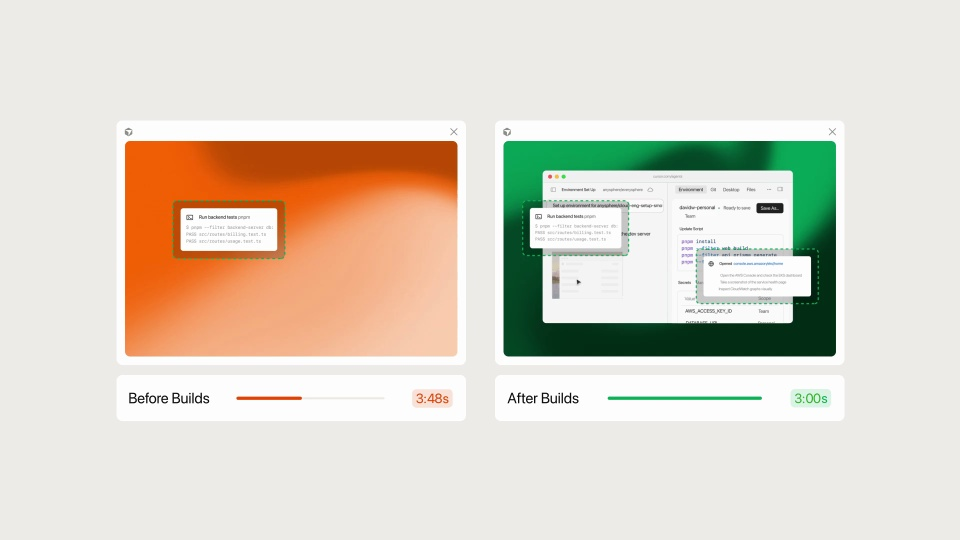
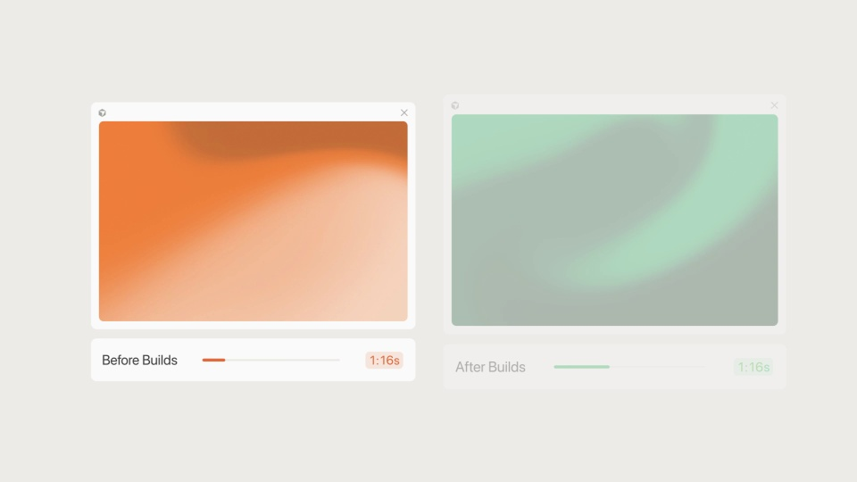
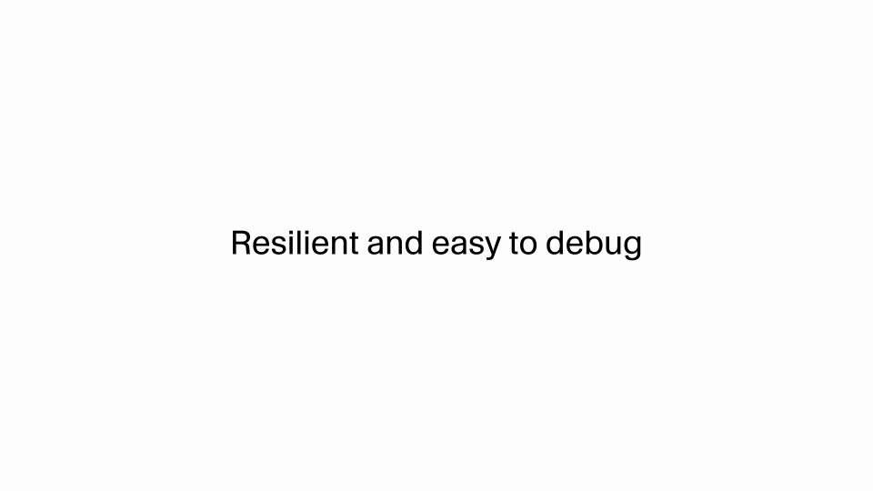
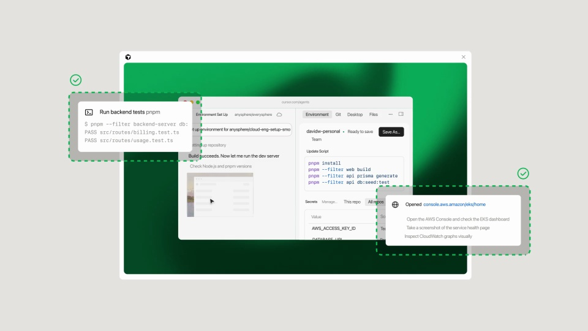
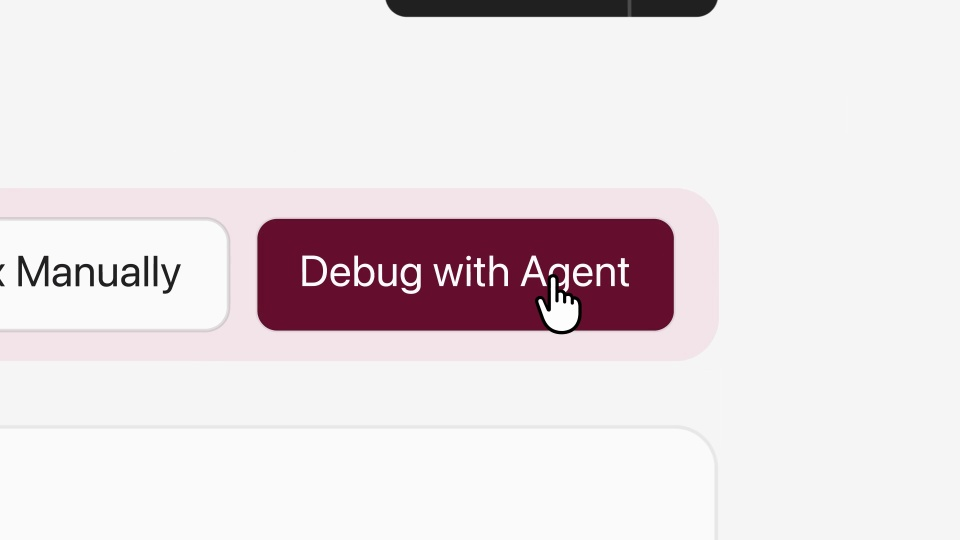

Cursor / V257
Cursor Builds — cloud agents start 3x faster
先用同时开始的前后对照说明速度，再用一次局部失败说明恢复方式。把“更快”和“容易处理问题”分开讲清楚。
构图与编排 可播放 · 可替换内容
整体编排规则示例
查看 HTML 源码
<!doctype html><html lang="zh-CN"><meta charset="utf-8"><meta name="viewport" content="width=device-width,initial-scale=1"><title>Cursor Builds — cloud agents start 3x faster · sequence</title><style>html,body{margin:0;width:100%;height:100%;overflow:hidden;background:#f5f5f1}canvas{display:block;width:100%;height:100%;object-fit:contain}</style><body data-mode="sequence"><canvas width="1000" height="600"></canvas><script src="data.js"></script><script src="common.js"></script><script src="scene.js"></script><script src="bridge.js"></script></body></html>画面元素前后双窗口独立计时条构建步骤成功框错误提示调试按钮
MOTION LANGUAGE
动作与构图
局部动作 · 构图规则
01
两组从同一时点开始
Before 与 After 窗口尺寸一致、基线一致，计时同时启动。进度变化可以不同，但必须比较同一类工作，不能让两边暗中采用不同起点。
浅背景承托两组界面，前后使用可区分的暖色与绿色。标签、秒数和完成状态采用清晰无衬线字与对齐数字；完成文字在浅底上使用深色。
02
新流程完成后，旧流程仍可见
右侧先出现可用界面或完成标记，左侧继续显示自己的进度。保留一小段并置时间，让差异可以直接看见，然后再切到下一项能力。
03
遇到失败时给出下一步
遇到失败时给出下一步规则示例
查看 HTML 源码
<!doctype html><html lang="zh-CN"><meta charset="utf-8"><meta name="viewport" content="width=device-width,initial-scale=1"><title>Cursor Builds — cloud agents start 3x faster · sequence</title><style>html,body{margin:0;width:100%;height:100%;overflow:hidden;background:#f5f5f1}canvas{display:block;width:100%;height:100%;object-fit:contain}</style><body data-mode="clip" data-start="9" data-end="15"><canvas width="1000" height="600"></canvas><script src="data.js"></script><script src="common.js"></script><script src="scene.js"></script><script src="bridge.js"></script></body></html>局部构建项出现失败提示，其余完成项保留。推近 Debug with Agent 或对应修复入口，点击后显示继续处理的方向，不用抹掉错误来制造全程成功。
04
换案例时重做比较条件
用新任务的实际起点、结束条件和时长替换对照。可以沿用双窗口和进度条，但速度主张须与显示内容一致；恢复段保留明确的错误和可执行入口。
SEQUENCE
段落与节奏
点击段落，定位到上方编排示意。





画面参考 · 离散静帧
KEEP THE RELATIONSHIPS
制作其他主题
- 可迁移为性能对比演示，必须固定起点与同一工作量
- 对比数值须来自测量；示例倍速仅复述原片主张
制作约束
前后双窗口 / 独立计时条 / 构建步骤 / 成功框 / 错误提示 / 调试按钮
- 两组同时开始但进度速度不同，新流程先显示成果
- 随后承认一个局部失败，提供调试按钮而不是宣称所有任务成功
- 速度与可恢复性分段说明，二者不混成单一数字